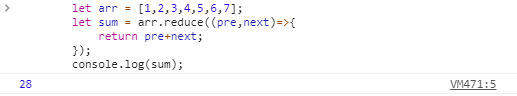
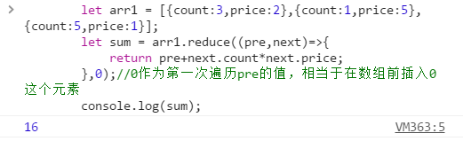

reduce（收敛）：接收一个回调函数作为累加器，数组中的每个值（从左到右）开始缩减，最终为一个值，是ES5中新增的又一个数组逐项处理方法。
reduce（callback,initialValue）
callback（一个在数组中每一项上调用的函数，接受四个函数：）
initialValue（可选的初始值。作为第一次调用回调函数时传给previousValue的值）
//基本数组的求和
let arr1 = [1,2,3,4,5,6,7];
let sum = arr.reduce((pre,next)=>{
return pre+next;
});
console.log(sum);
//用于对象数组的求和就需用到第二个参数
let arr1 = [{count:3,price:2},{count:1,price:5},{count:5,price:1}];
let sum = arr.reduce((pre,next)=>{
return pre+next.count*next.price;
},0);//0作为第一次遍历pre的值，相当于在数组前插入0这个元素
console.log(sum);